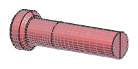
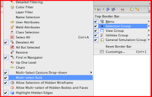
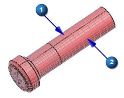
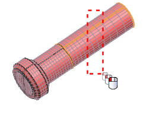
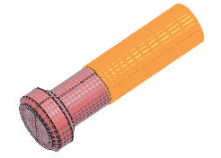
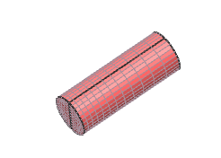

Display the bolt shank
 Simulation Navigator
Simulation Navigator
-

 HubFlangeBolt.af1.afm (expand)
HubFlangeBolt.af1.afm (expand)
-
HubFlangeBolt.af1.afm (deselect)
-
BOLT.f1.fem (select)
-

Display only the bottom portion of the bolt shank. To make selection easier, turn on the Multi-Select Rule tool in the Top Border bar.
Ribbon Options (Top Border bar)
-
 Selection Group
Selection GroupNote
Make sure that Selection Group is selected with a check mark.
-
Multi-Select Rule (select, if necessary)

Show Only (Home tab→Utilities group)
-
Type Filter (Top Border bar)
Polygon Body

-



-
Type Filter (Top Border bar)
Mesh
-
Multi-Select Rule (Top Border bar)
Inside/Crossing
-
Drag a box through the two meshes at the end of the shank.

-
The meshes are selected.

-
OK
-
